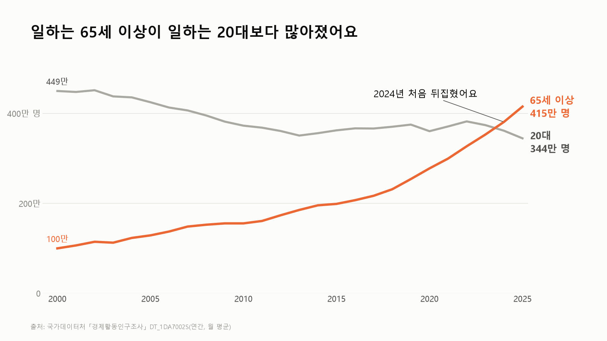
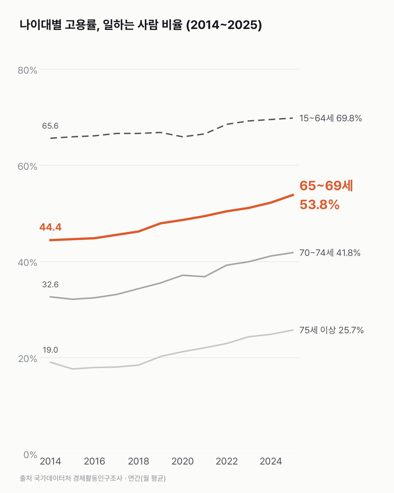

일하는 65세 이상이 일하는 20대보다 많아졌어요
둘의 자리가 바뀐 건 사람 수가 달라져서예요. 일터에서 마주치는 얼굴의 나이도 그만큼 바뀌고 있어요.

- 2025년 일하는 65세 이상은 414.7만 명이에요. 일하는 20대는 344.2만 명이에요.
- 20대 중 일하는 비율은 2000년에도 2025년에도 60.2%로 같아요.
- 그사이 20대는 747만 명에서 571만 명으로 줄고, 65세 이상은 339만 명에서 1,051만 명으로 늘었어요.
2010년으로 돌아가 보면 일하는 20대는 372.4만 명이었어요. 일하는 65세 이상은 155.3만 명, 20대의 절반이 안 됐어요. 그보다 10년 앞선 2000년엔 449만 명과 100만 명으로 네 배 넘게 벌어져 있었어요. 그 차이가 해마다 좁혀지다 2024년에 뒤집혔어요.
20대 중 일하는 사람 비율은 2000년 60.2%, 2025년 60.2%. 소수점까지 같더라고요. 달라진 건 20대 인구였어요. 747만 명에서 571만 명으로 줄면서 일하는 20대도 같이 줄었어요.
65세 이상은 사람도, 일하는 비율도 늘었어요. 인구는 339만 명에서 1,051만 명으로 세 배 넘게 늘었고, 그중 일하는 비율은 29.4%에서 39.5%가 됐어요. 65~69세만 떼어 보면 53.8%. 절반 넘게 일해요.
2025년 한 해만 봐도 그래요. 전체 취업자는 1년 새 19.3만 명 늘었는데, 65세 이상은 34.1만 명 늘었어요. 15~64세는 14.8만 명 줄었어요.

전체 증가보다 65세 이상 증가가 더 컸던 한 해였어요. 그 34.1만 명은 어떤 일을 하고 있을까요? 그게 다음으로 궁금해졌어요.
이 숫자는 어디서 왔나요
출처
| 데이터 | 출처 | 쓰임 |
|---|---|---|
| 연령계층별 경제활동인구 총괄 (KOSIS DT_1DA7002S) | 국가데이터처 「경제활동인구조사」 | 연간(12개월 평균) 인구·취업자·고용률, 2000~2025 |
- 고용률 = 취업자 ÷ 같은 나이 인구. 연간 값은 12개월 평균이다.
- 2000~2017년 값은 추계인구 변경으로 2018년 1월에 소급 수정됐다.
- 이 조사의 인구는 군인·수감자 등을 빼고 추계한 값이라 주민등록 인구(고령자 통계의 65세 이상 1,112만 명 등)와 다르다.
- 교차 확인: 2025년 65세 이상 고용률 39.5%(2024년 38.2%), 취업자 414만 7천 명(약 34만 명 증가)은 '2026 고령자 통계' 보도와 같다.
- 수집일: 2026-10-30 (KOSIS 오픈API).
기준일
2000~2025년(연간).
한계 3가지
이 데이터로 말할 수 없는 것
- 취업자 수 비교는 인구 크기에 좌우된다. 그래서 고용률을 함께 그렸다.
- 일자리의 질(임금·근로시간·정규직 여부)은 이 표로 알 수 없다. 고령층이 계속 일하고 싶어 하는 이유는 고령층 근로 희망 글에서 다뤘다.
- 원인(노후 소득, 건강, 정년 등)은 이 데이터로 알 수 없다.
전제 기록
데이터를 보기 전에 적어둔 것, 그리고 보고 나서 바꾼 것
- 순서를 어겼다: 이 글은 데이터를 먼저 받아 출력해 본 뒤 전제 기록(premises)를 썼다. 그래서 전제엔 결과와 상관없이 지켜야 할 것(인구 효과를 고용률로 함께 보이기)만 적었다.
질문
414.7만 명. 2025년에 일한 65세 이상이에요. 같은 해 일한 20대는 344.2만 명이었어요. 둘이 처음 자리를 바꾼 건 2024년이에요. 20대가 일을 덜 하게 된 건지 궁금해서 경제활동인구조사를 열어 봤어요.
새 글 나오면 받아 보기
지금은 RSS로 받을 수 있어요. 메일은 아직 준비 중이에요.